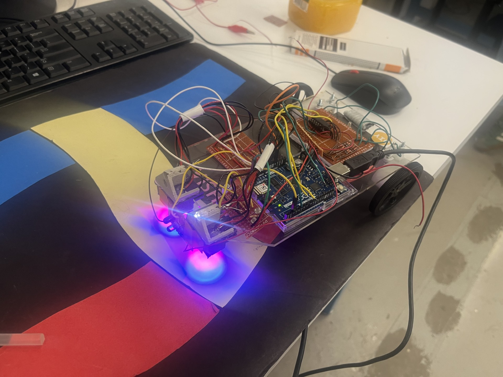
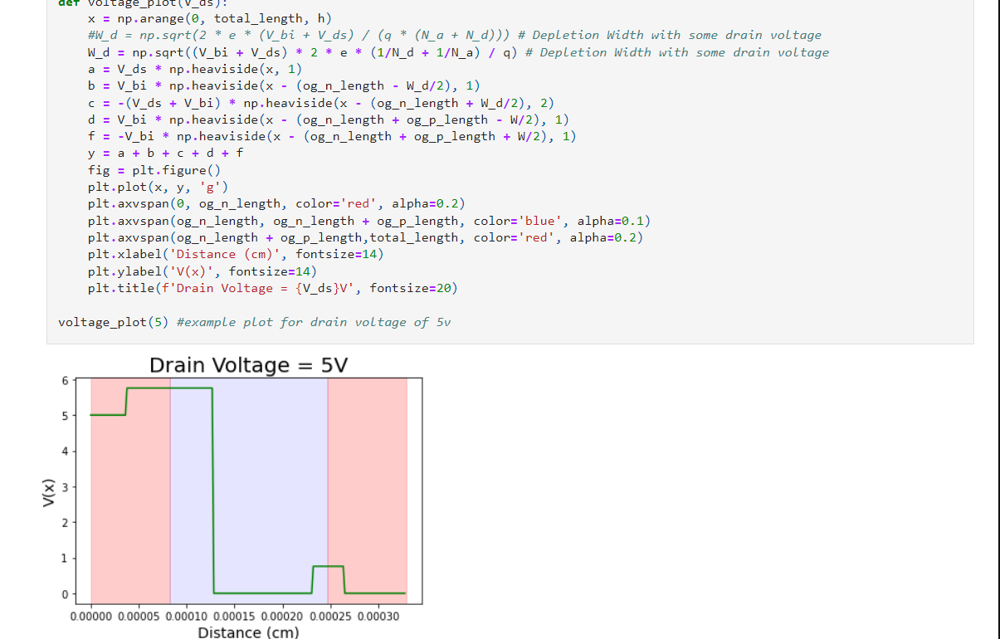
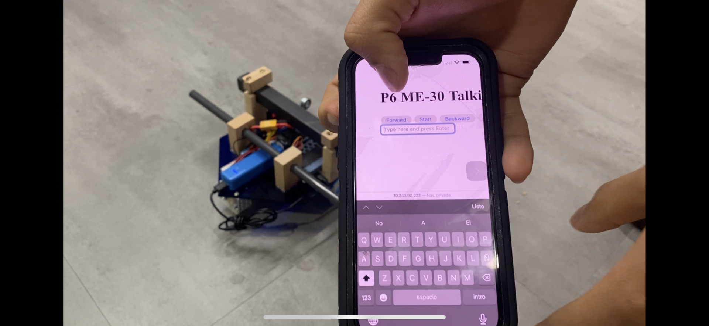

Victor Vazquez
Victor.vazquez@tufts.edu | Medford,MA
|508-562-1667| Linkedin
EDUCATION
Tufts University, Medford, MA
Bachelor of Science in Electrial Engineering
GPA 3.60, Dean's List All Semesters
Relevant Courses: Computational, Intro to Computer Science, Intro to Electronics and Circuits,
Intro to Digital Logic, Junior Design Project, Intro to Computing in Engineering
TTECHNICAL SKILLS
Software/Tools: Microsoft Office, Google Suite
Programming Languages: Python, MATLAB, C++, VHDL, HTML
PROJECTS
Junior Design Autonomous Vehicle Final Project, Tufts University
Jan 2024 - May 2024
- Coded a robot car with Arduino C++ to sense obstacles in front of it using an IR light collision
system on an Arduino UNO WiFi Rev2
- Programmed a robot car to follow a predetermined route across a red, blue, and yellow colored
road using state machines
- Controlled the motors of a robot with OOP so that the direction, speed, and turning of the robot
could be controlled with class functions

Transistor Simulation, Computational Physics, Tufts University
Jan 2024 - May 2024
- Coded with python to simulate the voltage potential across the transistor using a 2-dimensional
model
- Calculated the depletion width of a model transistor as a function of the drain voltage

Raspberry Pi Robot Car, Electronics & Controls I, Tufts University
Sept 2023 - Dec 2023
- Programmed a Raspberry Pi using python with the Flask and GPIO library to create an HTML
webpage with buttons that would move a robot in all 4 directions
- Connected two motors to an H-Bridge and used the GPIO ports of the Raspberry Pi to control the
movement and speed of the motors with Pulse Width Modulation

EXPERIENCE
Bridge to Engineering Success at Tufts Program, Medford, MA
June 2021 - Present
BEST Scholar
- Actively participate in weekly academic, personal and professional development workshops
- Serve as a peer mentor for incoming first-generation, first-year students
Renewable Energy and Applied Photonics Lab, Tufts University
June 2022 - Jan 2024
Research Intern
- Programmed a monochromator using MATLAB to receive and send data that was plotted in real
time as well as an optical chopper where commands were sent to augment RPM
- Characterized PMMA on Silicon to get the etch rates of different etching recipes; Argon, CHF3,
and CF4
- Redesigned and revitalized a piecewise Photoluminescence optical system in a group of 3
Society of Latinx Engineers and Scientists (SOLES), Tufts University
Sept 2022 - May 2023
Corporate Liaison
- Built partnerships with Boston area STEM companies to provide opportunities for
underrepresented students
- Researched and developed a catalog of mentorship programs, sponsorships, and funding
opportunities for SOLES
Tufts Ballet Folklorico, Tufts University
Sept 2022 - May 2023
Performer
- Performed at seven events with multiple collaborations between student organizations, diversity
centers, and Tufts departments
- Spread awareness about Mexican Folklorico and its indigenous roots and styles